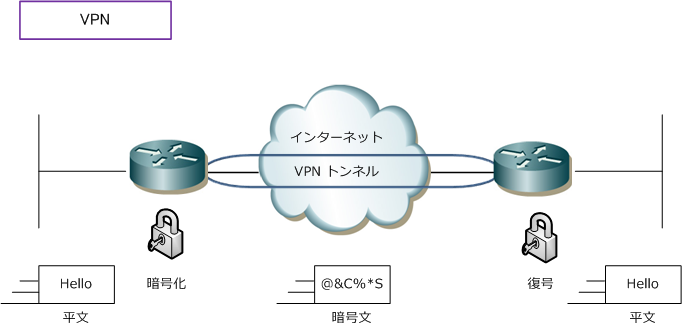
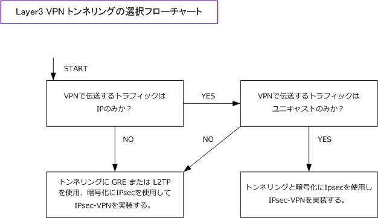

VPN - Tunneling & Encryption
VPN におけるトンネリングと暗号化
VPN接続は、トンネリングと暗号化によって実現しています。トンネリングを行えるプロトコルには PPTP、L2F、L2TP、IPsec、GRE などがあります。一方、これらのうち暗号化を行えるプロトコルは IPsecだけとなります。従って、VPN接続のためにIPsecを使用すればこのプロトコルだけで暗号化と トンネリングを行うことができます。つまり、他のプロトコルをトンネリングに使用した場合、暗号化 のために別途IPsecなどのプロトコルを使用する必要があります。この章ではこのIPsecを中心に解説 していきます。L2トンネリングの解説は PPTP L2F L2TP 、L3トンネリングは GRE でご確認下さい。
VPN における基本用語
| 用語 | 説明 |
|---|---|
| トンネル | インターネットなどの公衆網を利用した仮想のポイントツーポイント接続 |
| 暗号化 | 平文(クリアテキスト)と呼ばれるもとの情報を解読不能な形式に変換するプロセス |
| 復号 | 暗号化された暗号文を平文に戻して、ユーザが情報を解読できるようにするプロセス |
| ハッシュ関数 | ある与えられたデータから、そのデータを代表する固定長の数値を生成する演算手法 |
| 認証 | ネットワーク接続へのアクセスを試みる「ユーザ or プロセス」の身元証明のプロセス |
| 認可 | 認証後のユーザ or プロセスに、ネットワーク接続リソースにアクセスする権限を与えるプロセス |
| 公開鍵暗号 | ペアとなる2つの鍵を使用してデータの暗号化と復号を行う暗号化方式 |
| 公開鍵 | 公開鍵暗号方式で使われるペアの鍵のうち、暗号用の公開される方の鍵 |
| 秘密鍵 | 公開鍵暗号方式で使われるペアの鍵のうち、復号用の公開されない方の鍵 |
| CA | 暗号化を目的とするデジタル証明書の作成、発行、管理する仕組み |
| 共通鍵暗号 | 暗号化と復号に同じ鍵を用いる暗号化方式 |
| 共通鍵 | 共通鍵暗号方式で使われる暗号化と復号のための鍵 |
| Diffie-Hellman鍵交換 | 安全でない通信チャネルを使用して、共通鍵を安全に送受信するための鍵交換方式 |

主なVPNプロトコルの比較表
IPsecだけで暗号化とトンネリングの2つが行えるのなら、他のプロトコルを使用する必要がないのでは ないかという疑問が生まれるかもしれません。しかし下表を見て頂ければ分かると思いますが、例えば 1対Ｎのサイト間VPN接続を行って、その拠点間で例えばOSPFを使用したい場合はIPsecではそれを実現 できません。IPsecではマルチキャスト伝送が行えないのでこの場合はGREの力を借りる必要があります。
| VPN プロトコル |
何のプロトコル上で 伝送できるか |
何のプロトコルを 伝送できるか |
マルチキャスト 伝送は可能か |
データ暗号化 完全性保障 |
ポピュラーな ソリューション |
|---|---|---|---|---|---|
| IPsec | IP | L3（ IP ） | × | ○ IPsecのみでOK |
ＩＰユニキャストの トンネリング |
| GRE | IP | L3（IP, IPX, etc） | ○ | × 代替案：GRE/IPsec |
ルーティングプロトコル のトンネリング |
| L2TP | UDP/IP, IP, ATM | L2（ PPP ） L3（IP, IPX, etc） |
○ | × 代替案：L2TP/IPsec |
PPPの延長とした 認証ネットワーキング |
